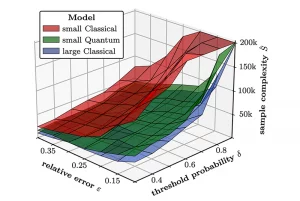
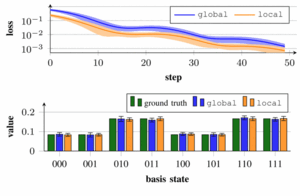
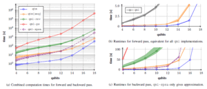
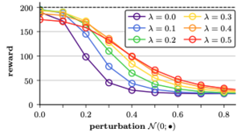
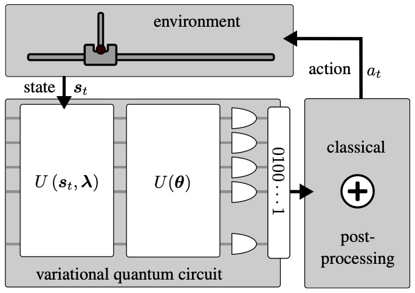
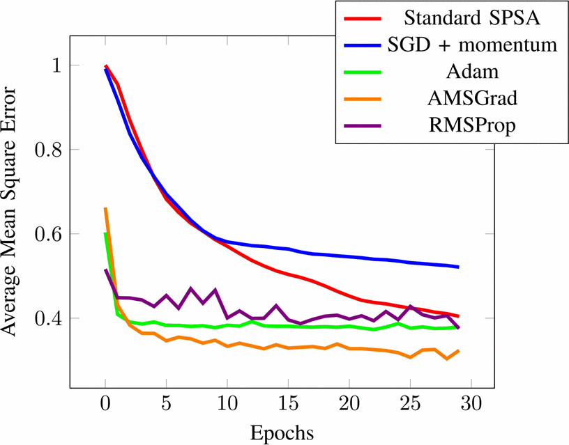
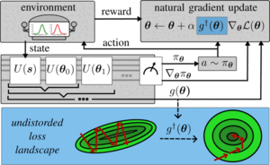
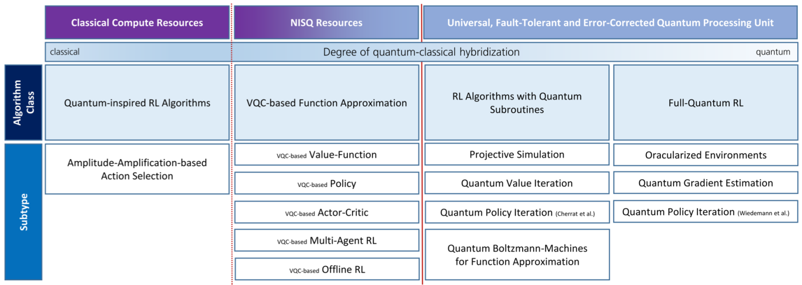
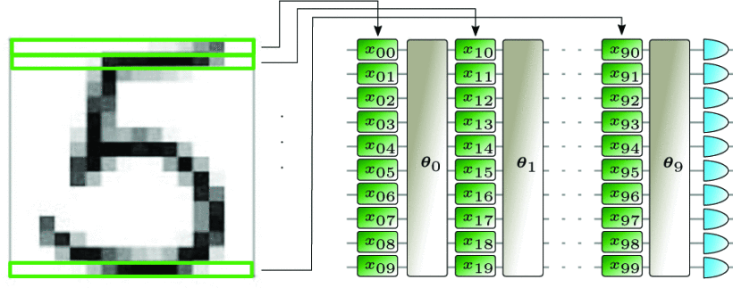

Nico Meyer is a senior scientist in the Quantum Compilation Group of Fraunhofer IIS and pursues a PhD jointly supervised with the FAU Erlangen-Nuremberg. He works at the intersection of quantum computing and machine learning, with multiple publications in leading venues. Nico has received several awards and recognitions, most recently the Dieter Schwarz Award at the ML4QT Symposium in Heilbronn. He currently applies machine-learning methods, particularly variational approaches, to develop quantum middleware, focusing on quantum error correction and fault tolerance.
Research interest:
- Machine Learning for Quantum Computing
- Quantum Error Correction & Fault-Tolerance
- Quantum Reinforcement Learning
You can also find me at Pattern Recognition Lab at FAU.
Publications

Learning encodings by maximizing state distinguishability: Variational quantum error correction
We propose a novel objective function for tailoring error correction codes to specific noise structures by maximizing the distinguishability between quantum states after a noise channel, ensuring efficient recovery operations. We formalize this concept with the distinguishability loss function, serving as a machine learning objective to discover resource-efficient encoding circuits optimized for given noise characteristics. We implement this methodology using variational techniques, termed variational quantum error correction. Our approach yields codes with desirable theoretical and practical properties and surpasses standard codes of comparable size under structured noise. We also provide proof-of-concept demonstrations on IBM and IQM hardware devices, highlighting the practical relevance of our procedure.


Benchmarking Quantum Reinforcement Learning
To enable valid performance comparisons and to streamline current research in this area, we propose a novel benchmarking methodology, which is based on a statistical estimator for sample complexity and a definition of statistical outperformance. Furthermore, considering QRL, our methodology casts doubt on some previous claims regarding its superiority. We conducted experiments on a novel benchmarking environment with flexible levels of complexity. While we still identify possible advantages, our findings are more nuanced overall. We discuss the potential limitations of these results and explore their implications for empirical research on quantum advantage in QRL.
Variational Quantum Error Correction
Quantum error correction is critical for protecting quantum computations from noise, yet standard protocols demand significant qubit overhead. To address this, we introduce a learning-based approach that allows tailoring encodings to specific noise channels. This approach is based on a novel loss function that maximizes the distinguishability of noisy quantum states. We thereby realize a variational quantum algorithm that discovers new resource-efficient codes, which empirically outperform standard quantum error correction schemes on various noise structures. We furthermore derive promising theoretical properties of these variational quantum error correction (VarQEC) codes and perform proof-of-concept experiments on quantum hardware.

Comprehensive Library of Variational LSE Solvers
Linear systems of equations can be found in various mathematical domains, as well as in the field of machine learning. By employing noisy intermediate-scale quantum devices, variational solvers promise to accelerate finding solutions for large systems. Although there is a wealth of theoretical research on these algorithms, only fragmentary implementations exist. To fill this gap, we have developed the variational-lse-solver framework, which realizes existing approaches in literature, and introduces several enhancements. The user-friendly interface is designed for researchers that work at the abstraction level of identifying and developing end-to-end applications.

Qiskit-torch-module: Fast prototyping of quantum neural networks
We develop the qiskit-torch-module, building on the widely used Qiskit software environment. It improves runtime performance by two orders of magnitude over comparable libraries, while facilitating low-overhead integration with existing code-bases. Moreover, the framework provides advanced tools for integrating quantum neural networks with PyTorch. The pipeline is tailored for single-machine compute systems, which constitute a widely employed setup in day-to-day research efforts.

Robustness and generalization in quantum reinforcement learning via lipschitz regularization
This paper addresses the robustness and generalization of quantum reinforcement learning by combining principles from quantum computing and control theory. Leveraging recent results on robust quantum machine learning, we utilize Lipschitz bounds to propose a regularized version of a quantum policy gradient approach, named the RegQPG algorithm. We show that training with RegQPG improves the robustness and generalization of the resulting policies. Furthermore, we introduce an algorithmic variant that incorporates curriculum learning, which minimizes failures during training. Our findings are validated through numerical experiments, demonstrating the practical benefits of our approach.

Quantum Policy Gradient Algorithm with Optimized Action Decoding
Quantum machine learning implemented by variational quantum circuits (VQCs) is considered a promising concept for the noisy intermediate-scale quantum computing era. Focusing on applications in quantum reinforcement learning, we propose an action decoding procedure for a quantum policy gradient approach. We introduce a quality measure that enables us to optimize the classical post-processing required for action selection, inspired by local and global quantum measurements. The resulting algorithm demonstrates a significant performance improvement in several benchmark environments.

An Empirical Comparison of Optimizers for Quantum Machine Learning with SPSA-based Gradients
We introduce a novel approach that uses the approximated gradient from SPSA in combination with state-of-the-art gradient-based classical optimizers. We demonstrate numerically that this out-performs both standard SPSA and the parameter-shift rule in terms of convergence rate and absolute error in simple regression tasks. The improvement of our novel approach over SPSA with stochastic gradient descent (SGD) is even amplified when shot- and hardware-noise are taken into account. We also demonstrate that error mitigation does not significantly affect our results.

Quantum Natural Policy Gradients: Towards Sample-Efficient Reinforcement Learning
We propose the quantum natural policy gradient (QNPG) algorithm - a second-order gradient-based routine that takes advantage of an efficient approximation of the quantum Fisher information matrix. We experimentally demonstrate that QNPG outperforms first-order based training on different Contextual Bandits environments regarding convergence speed and stability and moreover reduces the sample complexity. Furthermore, we provide evidence for the practical feasibility of our approach by training on a 12-qubit hardware device.

A Survey on Quantum Reinforcement Learning
We intend to provide a broad overview of the literature on quantum reinforcement learning and put particular emphasis on recent developments. With a focus on already available noisy intermediate-scale quantum devices, these include variational quantum circuits acting as function approximators in an otherwise classical reinforcement learning setting. We provide both a birds-eye-view of the field, as well as summaries and reviews for selected parts of the literature.

Incremental Data-Uploading for Full-Quantum Classification
This work proposes ‘incremental data-uploading’, a novel encoding pattern for high dimensional data that tackles these challenges. We spread the encoding gates for the feature vector of a given data point throughout the quantum circuit with parameterized gates in between them. This encoding pattern results in a better representation of data in the quantum circuit with a minimal pre-processing requirement. We show the efficiency of our encoding pattern on a classification task using the MNIST and Fashion-MNIST datasets, and compare different encoding methods via classification accuracy and the effective dimension of the model.